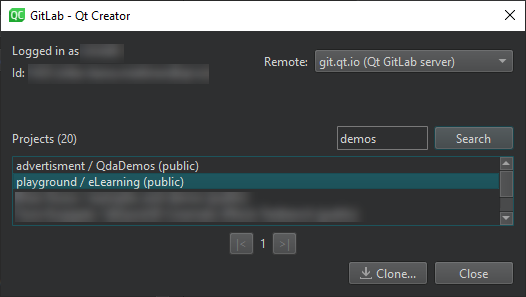
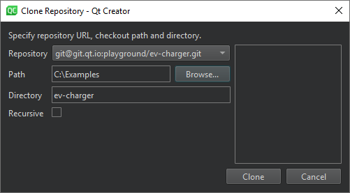

GitLab
GitLab is a DevOps tool developed by GitLab. You can clone projects from GitLab servers and use Git to manage your local and remote repositories.
To use GitLab, create a connection to the GitLab server and clone the projects you want to work on. Link previously cloned projects to GitLab in the project settings to receive event notifications in the Version Control view.
Note: Enable the GitLab plugin to use it.
Connecting to GitLab Servers
To connect to a GitLab server, specify the server host name and port number, as well as an access token that you create in GitLab for Qt Creator. The permission scope of the token must be at least read_api or api.
To specify connections to GitLab servers, go to Preferences > Version Control > GitLab:
To add GitLab servers:
- Select Add to open the Add Server dialog.
- In Host, enter the host name of the GitLab server.
- In Description, enter a free-form text that is displayed in the GitLab settings of a linked project.
- In Access token, enter the access token you created for Qt Creator in the GitLab server, in Preferences > Access Tokens.
- In Port, enter a port number.
- Clear HTTPS to use an HTTP connection instead of a secure connection.
- Select Add to create the connection.
In the GitLab tab, curl displays the path to the curl tool used for HTTP connections. Specify another path to use another instance of the tool than the one Qt Creator found.
To edit the selected connection, select Edit.
To remove the selected connection, select Remove.
Cloning Projects
You can clone projects from the connected GitLab servers. Qt Creator reads your user name and ID from the access token and displays the available projects in each server. You can search for a particular project or browse projects in the list.
To clone projects from GitLab:
- Go to Tools > GitLab to view a list of connected GitLab servers and available projects in each server.

- In Remote, select a GitLab server.
- In Projects, select the project to clone.
- Select Clone to open the Clone Repository dialog.

- In Repository, specify the URL of the repository.
- In Path, specify the path where to clone the repository.
- In Directory, specify the name of the directory for the cloned repository.
- Select Recursive to also clone submodules of the repository.
- Select Clone to clone the project to the specified directory.
Qt Creator automatically opens the project. If the cloned project has several project files (such as CMakeList.txt, .pro, and .qbs), Qt Creator prompts you to select the one to open. If it does not have a project file that Qt Creator can open, go to File > New Project > Import Project > Import Existing Project and import the project as a generic project.
See also Enable and disable plugins, Link projects with GitLab, Set up version control systems, Use common VCS functions, Use project wizards, Version Control Systems, and Git.